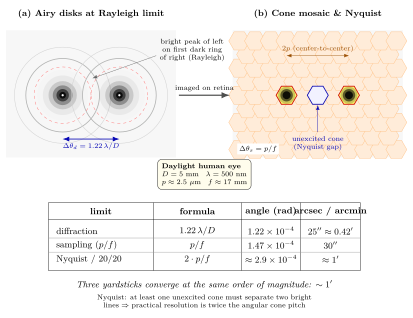

眼睛的分辨极限真的就是物理极限吗?
上一节我们讲完了生物发光——生命把化学能直接兑成光子的手艺. 从反应坐标跳到肉眼上, 只差最后一步: 这些光子从瞳孔进来, 在视网膜上被捕获, 然后被翻译成"我看见了". 全书走到这里, 光已经从 Fermat 那条寻求极值的直线, 一路变过电磁波、量子、耦合介质、非线性晶体、相干源、散射粒子, 再化作光子进入生命. 最后一个问题, 干脆落在自己身上——
视力表上第十行对应的"视力 1.0", 物理含义是: 在 5 米外能分辨两条相距 1.45 毫米的黑线, 折合到眼前的角度, 恰好是 1 弧分 ($1'=1/60^\circ\approx 2.9\times 10^{-4}$ rad). 这个数字是测出来的. 它和什么"物理极限"相比, 是大是小? 这就要在读者心里同时摆上两块挡板: 一块是圆孔衍射, 另一块是视网膜的像素密度. 我们将发现, 两块挡板的高度竟然几乎相等.
一、两个点源到底能不能分开——Rayleigh 判据与瞳孔
假设远处有两颗星, 角距为 $\Delta\theta$. 它们各自发出的光波经过瞳孔 (近似半径 $D/2$ 的圆孔) 时, 不再是理想点像, 而是被衍射成 Airy 盘——一个中心亮斑加若干同心圆环. 中心亮斑的半宽——到第一暗环的角度, 是圆孔衍射的特征角
$$ \theta_{\text{Airy}} = 1.22\,\frac{\lambda}{D}. \tag{1} $$
Lord Rayleigh (瑞利, 1879) 提出一个判据: 当一颗星的中心亮斑恰好落在另一颗的第一暗环上时, 两颗星"刚刚可以分辨". 记这一最小角距为 $\Delta\theta_d$, 则
$$ \Delta\theta_d = 1.22\,\frac{\lambda}{D}. \tag{2} $$
把人眼的数字代进去. 白昼下正常瞳孔直径约 $D=5$ mm, 取中心可见光波长 $\lambda=500$ nm:
$$ \Delta\theta_d = 1.22\times\frac{5\times 10^{-7}}{5\times 10^{-3}} = 1.22\times 10^{-4}\ \text{rad}. $$
换成角秒: $1\ \text{rad}\approx 2.06\times 10^5\ ''$, 所以 $\Delta\theta_d\approx 25''$. 换成弧分, 大约 $0.42'$. 这是"不考虑任何像差, 只被光的波动性本身挡住"时, 人眼能分辨的最小角距.
注意 Rayleigh 判据里藏着"光到底是什么"的一整段历史: 如果你坚持光是粒子直线传播, Airy 盘根本不该存在——两颗星应该无论多近都可分开, 只要点像机器足够精密. 正是 Fraunhofer 和 Fresnel 把衍射现象做成可计算的实验, Maxwell 把波动写成方程, 这条 $1.22\lambda/D$ 才有了地位. 所以读这条公式的时候, 我们其实已经把本书前几部分——Fermat、Huygens、Maxwell——都默认打包进去了.
二、视网膜也有像素——视锥马赛克的采样极限
可是眼睛不是只有瞳孔. 就算瞳孔衍射出再漂亮的 Airy 盘, 也得落在视网膜上被感光细胞拾起. 负责中央高分辨率、彩色、白昼视觉的是视锥细胞 (cone). 在黄斑中央凹 (fovea) 最密的区域, 视锥呈近似正六边形密排, 最小中心间距 $p\approx 2.5\ \mu$m (Osterberg 1935 的组织学实测给出约 150,000 个视锥每平方毫米, 对应几何间距正好在这个量级).
眼轴 (瞳孔到视网膜的距离) 大约 $f\approx 17$ mm (这是光学节点到视网膜的"后焦距", 比解剖上 24 mm 的眼球前后径短). 那么一个视锥在视场中占据的角度为
$$ \Delta\theta_s = \frac{p}{f}\approx\frac{2.5\times 10^{-6}}{1.7\times 10^{-2}}\approx 1.47\times 10^{-4}\ \text{rad}\approx 30''. $$
但"角像素大小"不等于"最小可分辨角". 根据 Nyquist 采样定理, 要区分两条亮线, 它们之间至少得有一个未被激发的视锥作为"暗"来隔开. 换言之, 视网膜这台相机的分辨率, 是两倍的角像素——大约 $1'$. 这和视力表的 20/20 基准几乎严丝合缝.
把两把尺并排放: 衍射极限 $\approx 25''\approx 0.42'$, 采样极限 $\approx 1'$. 衍射比采样好两倍多, 也就是说: 在一个"健康年轻人、白昼、看清晰的高对比目标"的条件下, 视力的瓶颈不在光的波动性, 而在视锥的密度. 但这两个数处在同一个数量级, 这是一个关键.

三、瞳孔大小的得失——为什么最佳不是最大
一个自然的问题是: 既然 $\Delta\theta_d=1.22\lambda/D$, 瞳孔越大衍射极限就越小, 那为什么人眼不干脆长一个 10 mm 大瞳孔? 因为公式 $(2)$ 只描述理想圆孔. 真实晶状体有球差、色差、波前畸变:
球差: 边缘光线折射过强, 比近轴光线聚焦得更近, 像上叠加一层"模糊圈". 球差导致的模糊角随 $D^3$ 增长——瞳孔放大一倍, 球差模糊变八倍. 衍射是 $1/D$, 球差是 $D^3$, 两者斗法, 一定在某个 $D$ 上取得最小. 测量和 Zernike 像差分析都给出: 最佳瞳孔直径约 3 mm. 这也和日常观察吻合——要把一页密密麻麻的小字看得最清, 往往是在柔和但不刺眼的光照下 (瞳孔缩到 3 mm 附近), 而不是正午烈日 (2 mm) 或昏暗室内 (6-7 mm).
色差: 晶状体对不同波长折射率不同, 红 (700 nm) 到蓝 (400 nm), 聚焦面沿光轴移动约 1 mm 左右——这比视网膜的厚度还大. 人眼之所以还能看清彩色世界, 是因为中央凹对蓝色几乎不敏感 (蓝视锥 S-cone 只占约 6%, 且不分布在中央凹中心); 神经回路相当于把蓝色通道"模糊化"使用. 这是一个很重要的提醒: 感光端与光学端是协同演化的, 不是独立优化. 晶状体做不好的事, 视网膜的布线去补; 视网膜做不好的事, 大脑的视觉皮层再去补.
极限检验: 假设把人眼的瞳孔当成哈勃主镜 (直径 2.4 m), 其衍射极限是
$$ \Delta\theta_{\text{HST}} = 1.22\times\frac{5\times 10^{-7}}{2.4}\approx 2.5\times 10^{-7}\ \text{rad}\approx 0.05''. $$
比人眼好约 500 倍. 但哈勃用大镜面的代价是——它的光路校准在真空里, 没有液体、没有眼球运动、没有活体代谢; 它不需要和 Nyquist 视锥同时匹配. 换句话说, 人眼选的不是"极限瞳孔", 而是"折中瞳孔", 并把这个折中和神经通路同时优化. 如果非要把瞳孔做得像哈勃一样大, 你得先把晶状体换成自适应光学系统, 并且把视神经的带宽扩展几百倍. 这两件事生物都做不到——所以 3-5 mm 就是演化给出的最优点.
四、为什么两条极限"巧合"相等——演化悬崖上的匹配
回到全章的主线问题: 衍射 $\approx 25''$, 采样 $\approx 30''$, 它们几乎相等. 这真的是巧合吗?
不是. 这是两个独立但耦合的工程约束在同一个悬崖边上达到平衡的必然结果. 我们可以这样论证:
若瞳孔再大一点, 衍射更好, 但像差恶化导致视网膜上点像变宽, 有效分辨率反而下降——得不偿失;
若瞳孔再小一点, 像差减少但衍射模糊增大, 以及进光量不足 (夜视困难)——得不偿失;
若视锥再密一点, 采样更好, 但每只眼 1.2 亿光感受器需要通过 120 万根视神经纤维送出去, 已经是一个 100:1 的压缩比 (这里涉及视网膜水平细胞、双极细胞、神经节细胞的空间滤波), 再加密视锥会在视神经处挤爆带宽——得不偿失;
若视锥再疏一点, 采样极限已经赶不上衍射极限了, 等于"光学给了你却浪费掉"——得不偿失.
演化不是在求解某个目标函数, 而是在这几面 tradeoff 的悬崖上跳舞. 它自然停在一个"衍射、像差、采样、带宽"四个约束同时处在边缘的点——于是三个数字碰巧接近. 这种"多条极限同时达到"的现象, 在工程上叫做 balanced design, 在生物里叫做 evolutionary optimum. Helmholtz 在 1867 年的《生理光学手册》中已经观察到视锥采样间距与瑞利判据"惊人地相近", 并明确指出这不是偶然, 是演化对视觉系统的"经济安排". Helmholtz 是把波动光学直接用在活体眼睛上的第一人, 他为这种"生物光学"奠定了方法论.
别的动物给我们提供了旁证:
- 鹰: 瞳孔和人相近 (约 3 mm 白昼), 但中央凹视锥密度约为人的 5 倍, 间距 $\approx 1\ \mu$m. 由公式 $(2)$, 它的衍射极限和我们相当; 但它的采样极限能降到 $\approx 0.2'$. 这下瓶颈转到光学端——鹰的眼球相对体重又偏大, 说明它演化出"更大 $f$、更密视锥"的方案去逼近衍射极限. 实测鹰类视力约是人类的 2-3 倍, 与这个估算一致.
- 猫: 夜行为主, 视网膜以视杆主导, 信号被大量求和以换取灵敏度, 代价是空间分辨率比人低一个量级——它把带宽预算投到了"低光子数下的信噪比"而不是"高分辨率".
- 苍蝇 (复眼): 每个 ommatidium 直径只有十几微米, 衍射极限差到 $\sim 1^\circ$ 量级, 空间分辨率差得一塌糊涂——但它的时间分辨率可以到 200 Hz 以上, 把"分辨率预算"从空间换到了时间. 这对一个需要躲避苍蝇拍的生物, 显然是正确的选择.
这就是 tradeoff 的另一面: 同一个光学-神经系统, 在不同生态位下可以做截然不同的选择, 但每个选择都挨着某条物理极限走. 生命并没有违背光的物理规律, 它只是在规律划出的可行域里, 沿着边界跑.
最后一个细节: 在极低光强下, 视锥、视杆甚至能响应单个光子的激发 (Hecht, Shlaer, Pirenne 1942 的经典实验: 暗适应后, 大约 5-7 个光子到达视网膜即可被自觉察知——统计后每个视杆平均只"吃"到 1 个光子). 这意味着眼睛在低光端撞到的是量子力学的底——不可能再少了. 上一节我们看到萤火虫可以把单次酶反应对应为单个光子; 本节我们看到眼睛可以把单个光子对应为一次神经脉冲. 于是生命的光学链条在两头都贴着物理极限: 发射端是单光子, 接收端也是单光子. 这恐怕是全书最干净的一个"极限一致性". 要补充的是, 自适应光学 (adaptive optics, Williams 1997 首次在活体人眼里实现) 可以实时测量晶状体波前畸变并用可变形镜补偿, 把视网膜上的成像几乎"洗干净"到衍射极限——他们第一次直接拍到了活体中央凹的单个视锥. 这给"人眼在正常条件下受采样而非衍射限制"提供了最有力的证据: 当把像差抠掉, 成像就贴到 Airy 盘上; 当把 Airy 盘画出来, 它正好落在视锥马赛克里.
小结 — 并为全书收束
本节的回答是: 人眼的分辨本领很接近物理极限, 但严格说卡住它的不只是衍射, 而是衍射、球差、视锥采样、神经带宽四条约束同时在边缘. 把公式 $(1)(2)$ 的数字代入人眼 ($D=5$ mm, $\lambda=500$ nm, $p=2.5\ \mu$m, $f=17$ mm), 我们得到 $25''$ 和 $30''$ 两条数量级相同的极限. 这不是偶然, 而是 Helmholtz 意识到的"演化经济性". 把同样的公式代到鹰、猫、苍蝇身上, 它们各自按生态位选择了 tradeoff 的方向. 一切都在光的物理极限划出的可行域里.
走到这里, 全书 40 节收束. 我们从 Fermat 的最短时间出发, 写下过 Snell 折射、Huygens 次波、Fresnel 衍射; 我们用 Maxwell 把光变成电磁波, 用 Planck 和 Einstein 把它量子化; 我们让它穿过透镜、光纤、晶体、等离子体; 让它散射成蓝天, 干涉出薄膜的色彩, 在激光腔里相干起来, 又在非线性介质里倍频、参量放大; 我们让它走进 LIGO 的千米干涉臂测出黑洞的并合, 让它进入光伏电池完成一次能量兑换; 最后, 让它在 ATP 的光合链里合成糖, 在萤火虫的反应里释放单光子, 又一次进入人眼, 被 $1.22\lambda/D$ 与视锥采样共同裁出一个清晰的世界. 光在每一层物理——几何、波动、量子、统计、相对论、非线性、生物化学——都留下了可计算的痕迹. 我们看见的一切, 都是这些层次的合奏.
所以, 光是什么? 它不是一个定义, 而是一条跨越几何光学、电动力学、量子力学、统计力学直到神经编码的完整链条的名字. 每一节我们都只是在其中一环停留片刻, 用公式和数字把那一环描出来. 愿读者合上本书时, 看向窗外任何一片光, 都能在脑中浮现一张有层次的图: 它的传播、它的干涉、它的量子身份、它的散射路径、它被接住的那一刻.
▲